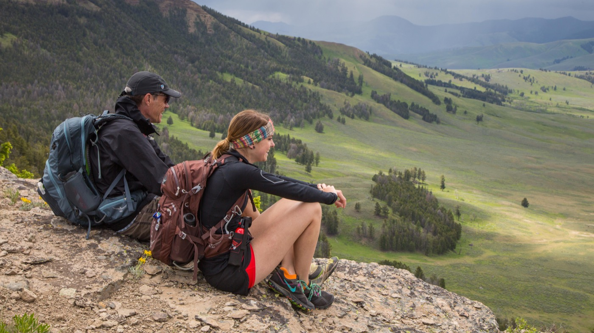

Get organized before you leave
Practice packing at home so you know where your equipment is. Adjust your choices to the route, weather, and park guidance.
Check your plans
Review the route and conditions, and tell someone your destination and expected return time.
Gather your essentials
Use the NPS checklist: navigation, sun protection, extra clothing, lighting, first aid, fire supplies where permitted, repair tools, extra food, water and treatment supplies, and emergency shelter.
Balance the load
Put denser items near the pack’s center and keep the sides balanced. Fill gaps so equipment does not shift.
Keep frequent-use items accessible
Use convenient pockets for snacks, water, a map, and sun protection. Keep your rain layer and headlamp easy to reach.
Try it on and check again
Close the pack, adjust its straps, and walk around at home. Reorganize anything that shifts and check your list before leaving.
Sources: NPS Ten Essentials and REI backpack-packing guidance.


Remember the Ten Essentials
This short NPS clip introduces the essential gear categories. Use the written checklist above alongside the video.
Open the video and descriptive transcript. Credit: NPS / Ranger Peelee.
Ask the packing assistant
Ask about the packing steps or organizing your equipment. Check park guidance for current conditions.
Loading the packing assistant…